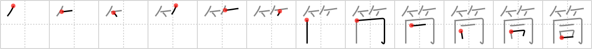

筒
← →
cylinder

Reading:
On-Yomi: トウ — Kun-Yomi: つつ
Heisig story:
Bamboo . . . monk.
Koohii stories:
1) [Nukemarine] 28-8-2007(424): Seriously, all BAMBOO sticks look the SAME, just long CYLINDERS. Should the story be more complicated?
2) [rtkrtk] 9-1-2008(44): Fully-grown bamboo consists of a number of cylinder-like sections, all exactly the same.
3) [DurablePants] 2-2-2007(10): A monk is put into a cylinder prison made of bamboo bars.
4) [Perry] 12-4-2010(8): BAMBOO and CYLINDERS are the SAME thing.
5) [kanjihito] 12-3-2012(5): A cylinder has the same form as bamboo (compare with token (#1001 符), which has the sape of a cylinder (#944 筒))).